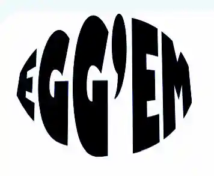

04 ANIMATION
Spil
I Tema 4 udviklede vi vores færdigheder i Java Script ved at designe og opbygge et spil fra bunden. Den første halvdel gik på designprocesser og komeptencer indenfor Illustrator, og den anden halvdel gik på kodning i Java Script. I designdelen lærte vi om forskellige design typer og hvordan man får inspiration, hvoraf jeg valgte at gå med flatdesign. Jeg valgte at bruge den type fremfor andre fordi man kan opnå et bedre resultat hvis ens kreative færdigheder ikke er udviklede nok.
